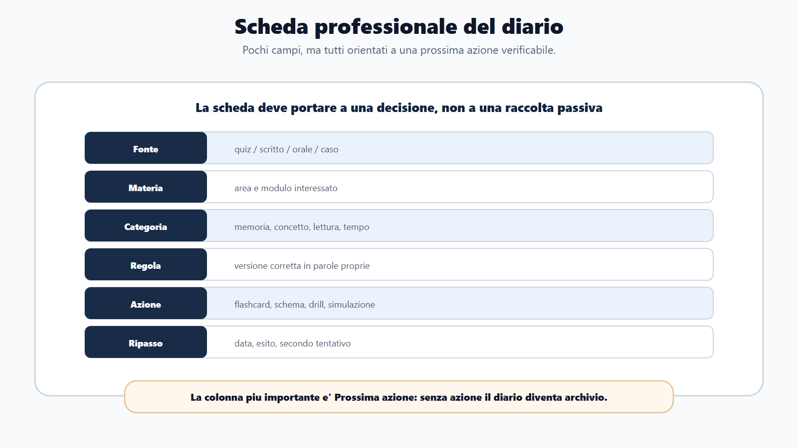
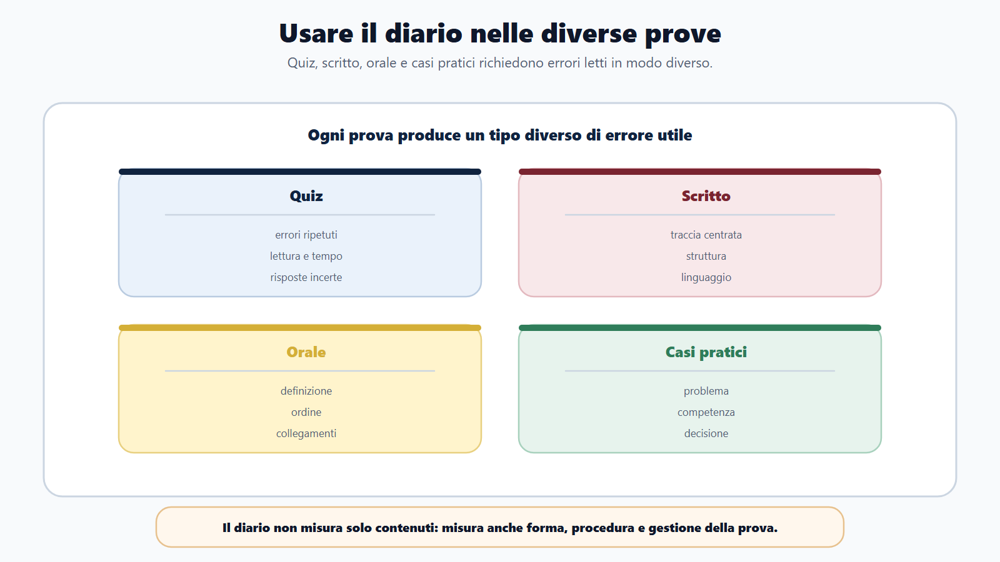
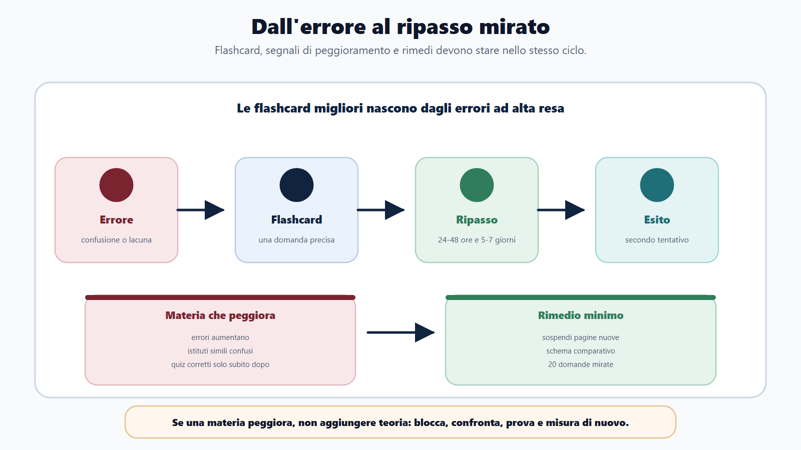
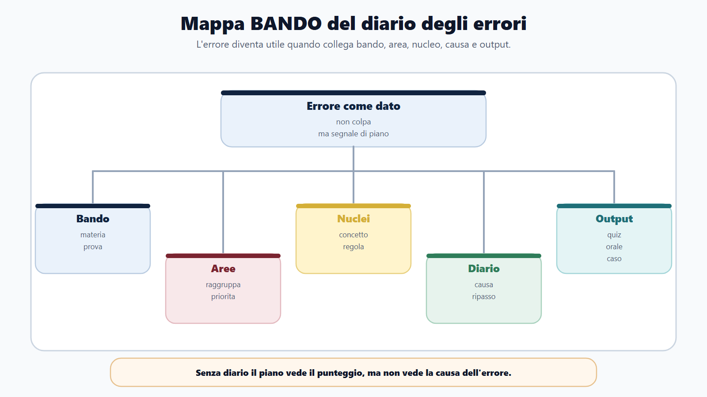
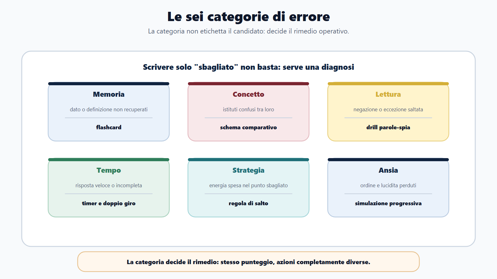
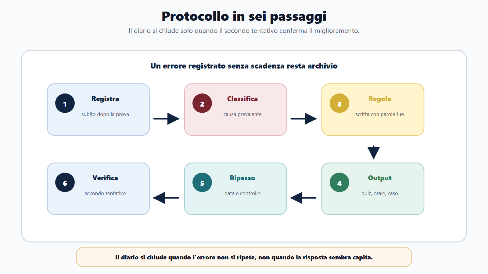

VOL-01 · Capitolo 23
Parte V · Kit finale
Il diario degli errori
Correggere è il primo passo. Molti fanno quiz, guardano il punteggio, leggono la risposta giusta e passano oltre. Dopo qualche giorno sbagliano di nuovo la stessa cosa. Il problema non è l’errore. Il problema è non usarlo.
Schema
Scheda diario errori

Schema
Diario per prove

Schema
Flashcard ripasso materia peggiora

Schema
Mappa bando diario errori

Schema
Sei categorie errore

Schema
Protocollo sei passaggi

01 · Che cos’è
Un cruscotto, non una punizione
Nel metodo l’errore è un dato. Dice dove il piano non sta funzionando, quale materia richiede ripasso, quale modulo è fragile, quale strategia va cambiata e quale output deve essere allenato. Il diario porta dalla correzione a una decisione concreta. La colonna più importante è «prossima azione»: senza azione, il diario diventa archivio.
A che serve in prova
Prepara gli ultimi giorni partendo dagli errori, non dall’umore. Mostra se una materia sta peggiorando anche mentre la studi. Collega studio e prova: senza diario, il piano resta cieco.
Che cosa registra
Data, fonte (quiz, scritto, orale, caso), materia, domanda, categoria, regola corretta con parole tue, prossima azione, data di ripasso, esito del secondo tentativo. Anche una risposta corretta può entrare se l’hai indovinata.
Registrare solo il punteggio, o scrivere «non sapevo» per ogni sbaglio. La risposta corretta dice che cosa era giusto; il diario dice che cosa devi fare dopo.
02 · BANDO
Dai peso, raggruppa, classifica, rifai
Il piano senza diario diventa rigido. Il diario senza piano diventa confuso. Devono lavorare insieme.
| Domanda | Uso del diario | Se la salti | |
|---|---|---|---|
| B — Bando | L’errore riguarda una materia o prova prevista? | Dai peso: alta resa prima dei dettagli isolati. | Correggi tutto con la stessa urgenza. |
| A — Aree | In quale area cade? | Raggruppa: accesso, silenzio, organi, negazioni. | Tratti ogni sbaglio come isolato. |
| N — Nuclei | Quale concetto manca? | Seleziona il ripasso: schema, non rilettura del capitolo. | Studi «di più» in generale. |
| D — Diario | Perché ho sbagliato? | Classifica la causa: memoria, concetto, lettura, tempo, strategia, ansia. | La categoria resta «sbagliato». |
| O — Output | Che cosa devo rifare? | Quiz, caso, orale, flashcard, drill. | Capisci l’errore e non lo chiudi al secondo tentativo. |
La risposta corretta dice che cosa era giusto. Il diario dice che cosa devi fare dopo.
Senza categoria, ogni errore sembra uguale. Senza prossima azione, ogni correzione resta un momento. Senza secondo tentativo, capisci e poi ripetere lo stesso sbaglio.
03 · Sei categorie
La categoria decide il rimedio
Se un errore sembra appartenere a due categorie, scegli quella che produce l’azione più utile. «Ho sbagliato perché non ricordavo la differenza tra accesso civico semplice e generalizzato»: è concetto, quindi schema comparativo, non una semplice flashcard.
| Categoria | Che cosa significa | Esempio | Azione |
|---|---|---|---|
| Memoria | Sapevi il tema ma non ricordavi dato, sequenza o definizione. | Termine, organo, definizione lenta. | Flashcard e ripasso. |
| Concetto | Hai confuso istituti o rapporti. | Accesso civico e documentale. | Schema comparativo. |
| Lettura | Hai letto male domanda, negazione o eccezione. | «Non rientra», «salvo», «eccetto». | Drill parole-spia. |
| Distrazione / tempo | Risposta troppo presto o sotto pressione. | Dettaglio saltato, domanda lasciata tardi. | Timer e doppio giro. |
| Strategia / ansia | Tempo nel punto sbagliato, o perdita di ordine. | Cinque minuti su una domanda a bassa resa; orale confuso. | Regola di salto; simulazione progressiva. |
04 · Protocollo
Sei passaggi, fino al secondo tentativo
Il diario non si chiude quando capisci l’errore. Si chiude quando non lo ripeti. Segna: corretto, ancora incerto, sbagliato di nuovo, da trasformare in mini-modulo. Se aspetti troppo, ricorderai solo il punteggio, non il processo.
Registra e classifica
Subito dopo batteria, simulazione o orale. Scegli la categoria che produce l’azione più utile.
Regola tua
«La regola corretta è…» con parole tue. Se non riesci a scriverla, torna alla fonte, non copiare la soluzione.
Output
Flashcard, orale, quiz mirato, schema, mini-caso, ripasso di pagina, simulazione breve, regola di strategia.
Ripasso e verifica
Entro 24–48 ore, poi 5–7 giorni, poi prima della simulazione. Il secondo tentativo chiude o riapre.
05 · Per prova
Quiz, scritto, orale, casi: errori diversi
Dopo una batteria non registrare tutte le domande. Registra gli errori che insegnano: materie ad alta resa, ripetuti, di lettura, di tempo, sul modulo, e le risposte giuste ma incerte. Il concorso non premia la fortuna ripetuta.
| Prova | Errori tipici | Azione |
|---|---|---|
| Quiz | Memoria, concetto, lettura, tempo, strategia. | Priorità ai pattern, non ai dettagli isolati. |
| Scritto | Traccia non centrata; idee corrette ma confuse; troppa teoria; termini generici; risposta incompleta. | Riscrivi la scaletta; schema definizione-funzione-effetti-esempio; aggiungi conseguenza pratica; glossario; timer. Conserva anche le scalette sbagliate. |
| Orale | Partire senza definizione; saltare i passaggi; non collegare; parole vaghe; niente esempi; blocco alla prima interruzione; troppo o troppo poco. | Per ogni simulazione: domanda, tempo, punto forte, errore, prossima risposta in 5–7 righe. Non serve un tema. |
| Casi | Problema non individuato; atto sbagliato; competenza o termine ignorati; interessi non bilanciati; privacy o motivazione dimenticate; soluzione irrealistica. | Drill sul passaggio che ripeti: fatti, regola, competenza, limite, decisione, motivazione. |
06 · Flashcard e materia che peggiora
Nascono dagli errori, non da tutto il manuale
Una flashcard utile ha domanda precisa, risposta breve, un solo nucleo, esempio o contrasto se serve, data di ripasso. Non trasformare ogni pagina in flashcard. Trasforma gli errori ad alta resa. Il diario mostra se una materia peggiora prima del panico.
Esempi di flashcard
Confondo accesso civico semplice e generalizzato: quando uso l’uno e quando l’altro? Dimentico gli organi del Comune: quali funzioni essenziali hanno Consiglio, Giunta e dirigente o responsabile? Leggo male le negazioni: quali parole-spia cerchio prima di rispondere?
Se la materia peggiora
Segnali: errori in aumento dopo nuovi capitoli; istituti simili confusi; quiz corretti solo subito dopo lo studio; orale disordinato; simulazioni che crollano con il timer. Cause: teoria senza ripasso, niente schemi comparativi, quiz troppo casuali, core saltato, materia lunga senza output. Rimedio: sospendi nuove pagine, tabella comparativa, venti domande mirate, registra, ripeti dopo 48 ore.
«Se sbaglio per distrazione, basta stare più attento». No. Anche la distrazione va allenata: cerchiare parole-spia, leggere due volte la consegna, usare il doppio giro, controllare prima di confermare.
07 · Cruscotto settimanale
Dai singoli errori a tre priorità
Compilalo sempre nello stesso giorno, con dati reali. I numeri non devono essere perfetti: devono mostrare se gli errori diminuiscono, si spostano o si ripetono. Le soglie sono segnali di lavoro, non voti assoluti: vanno adattate al formato e alla penalità della prova. Evita «studiare meglio» o «ripassare tutto».
| Indicatore | Soglia di intervento |
|---|---|
| Quiz svolti e percentuale di corrette | Meno del volume pianificato: ridurre dispersioni. Due settimane in calo: fermare nuovi contenuti e diagnosticare. |
| Errori registrati e errori ricorrenti | Molti sbagli non registrati: completare il diario prima di proseguire. Lo stesso errore almeno tre volte: drill mirato. |
| Secondi tentativi riusciti | Meno del settanta per cento: anticipare il ripasso e cambiare tecnica. |
| Output e materie stabili o fragili | Nessun output: programmare una simulazione. Più di due materie fragili: scegliere quella più pesata nel bando. |
08 · Chiusura della settimana
Mantengo, correggo, smetto
Il cruscotto è completo solo se contiene almeno una prossima azione con data e una verifica programmata. Se i dati non bastano, la prima azione della settimana successiva è produrre un campione misurabile. Ogni settimana chiediti: quale errore si ripete? Quale materia è stabile? Quale modulo resta fragile? Quale prova crea più ansia? Quale contenuto non rende?
Mantengo
Perché produce risultati verificabili. Esempio: drill del venerdì sugli accessi, se i secondi tentativi salgono.
Correggo
Con un’azione osservabile: venti quiz su accesso con correzione; due orali da due minuti; un caso con scaletta in quindici minuti.
Smetto di fare
Perché non produce risultati verificabili: lettura senza test, cambio di fonti, simulazioni senza analisi.
09 · Caso guidato
Marta, cinquanta quiz, quattordici errori
Di solito guarderebbe il punteggio e passerebbe oltre. Con il diario non deve «studiare tutto di più». Deve correggere i pattern.
Cinque cluster, non quattordici sbagli
Cinque errori su accesso. Tre su silenzio. Due negazioni lette male. Due domande lasciate per mancanza di tempo. Due dettagli isolati. I dettagli isolati non sono priorità.
Un rimedio per cluster
Accesso: schema comparativo. Silenzio: flashcard e dieci quiz mirati. Negazioni: cerchiare parole-spia. Tempo: simulazione a due giri. Dettagli isolati: non priorità. Poi secondo tentativo e data di ripasso.
10 · Verifica
Due domande da saper spiegare
Perché il diario degli errori è più utile della semplice correzione della risposta?
Perché identifica la causa dell’errore e produce una decisione di studio. La risposta corretta dice che cosa era giusto; il diario dice che cosa devi fare dopo. Classificare memoria, concetto, lettura, tempo, strategia o ansia cambia il rimedio: flashcard, schema, parole-spia, timer, salto, simulazione.
Se sbaglio per distrazione, non serve studiare: basta stare più attento?
No. Anche la distrazione va allenata. Se leggi male negazioni, eccezioni o dati, devi introdurre una procedura: cerchiare parole-spia, leggere due volte la consegna, usare il doppio giro, controllare prima di confermare. L’attenzione senza procedura non è un piano.
11 · Mini-esercizio
Gli ultimi dieci errori, una categoria dominante
Compila errore, categoria, causa, azione, data ripasso. Poi conta le categorie. La più frequente diventa il prossimo blocco di lavoro. Se tutti gli errori sono «non sapevo», stai ancora copiando la soluzione, non classificando.
| Se la categoria più frequente è… | Il prossimo blocco è… |
|---|---|
| Memoria | Flashcard dagli errori e richiamo a 24–48 ore. |
| Concetto | Tabella comparativa e dieci confronti sullo stesso nucleo. |
| Lettura | Routine parole-spia prima delle opzioni. |
| Tempo / strategia | Tre giri, soglia di abbandono, simulazione a timer. |
| Ansia / tenuta | Simulazione progressiva e struttura di risposta, non più teoria. |
12 · Da tenere ferme
Cinque regole, con il perché
1. L’errore è utile solo se produce una prossima azione, perché senza azione il diario è un archivio del punteggio.
2. Devi classificare la causa, non solo segnare la risposta giusta, perché memoria, concetto, lettura e tempo chiedono rimedi diversi.
3. Gli errori ricorrenti valgono più degli errori isolati, perché i pattern decidono il risultato e i dettagli no.
4. Flashcard, ripasso e simulazioni devono nascere dagli errori reali, perché coprire tutto il manuale disperde e non chiude i buchi.
5. Il diario serve a cambiare il piano prima che sia troppo tardi, perché aspettare l’umore o l’ultima settimana lascia i pattern intatti.
Prossimo capitolo
Checklist operative
Dal cruscotto ai controlli: se un punto è decisivo, deve essere verificabile. Carta e penna bastano. Il digitale è opzionale.